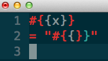

Let's Hash it out!
I plan on using the .group_by method alot as I research it seems a powerfull tool once learned. I plan on implementing in one of my latest challenges. It seems possible to group my list of cohort fellows by any way I see fit. I could also use this method once the cohorts groups are created and then name the group by the names in the list if it makes it easier to list the groups. As stated before, a Hash is a dictionary-like collection of unique keys and their values. Also called associative arrays, they are similar to Arrays, but where an Array uses integers as its index, a Hash allows you to use any object type. Hashes enumerate their values in the order that the corresponding keys were inserted. A Hash can be easily created by using its implicit form:
THe group_by method is a very handy method as a tool for gathering items in an array or hash and sotring them quickly and specifically. For instance, if wanted to group a list by name, frequency, first letter, or even last letter in a group. It builds a Map in which the keys are what ever the creater designates and the value is a List of all the items or elements that possess that designation.

The Enumerable mixin provides collection classes with several traversal and searching methods, and with the ability to sort. The class must provide a method each, which yields successive members of the collection. If Enumerable#max, #min, or #sort is used, the objects in the collection must also implement a meaningful <=> operator, as these methods rely on an ordering between members of the collection.